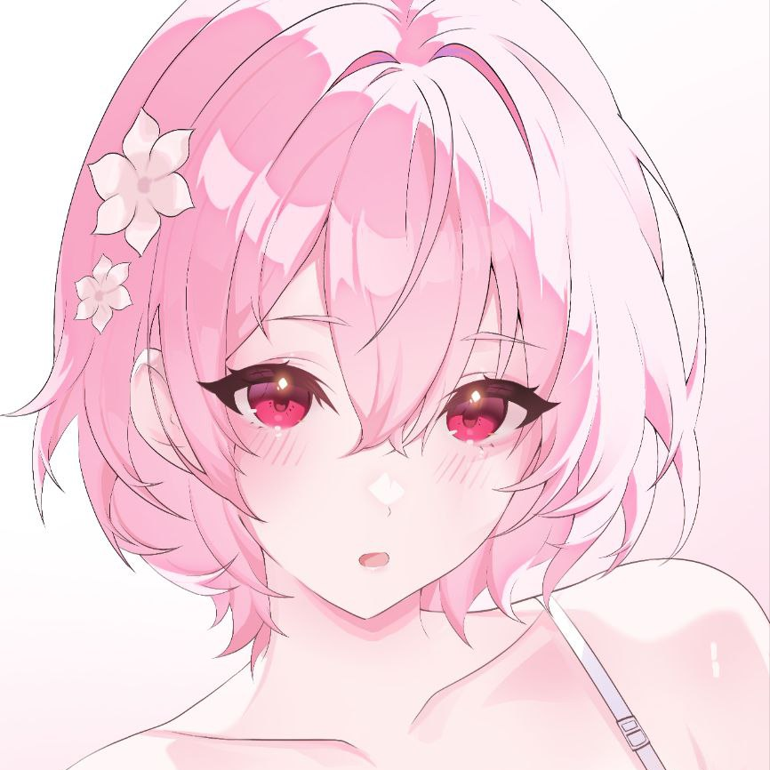

Mori Calliope
Calli | Miss Mori | CallioP
About Me
A female English-speaking Virtual YouTuber associated with hololive, debuting in 2020 as part of hololive English.
Likes and Dislikes
- Likes : Slaying people, dark spaces, flowers, beanies, stuffed dolls, sweets, the color red, mafia movies, rap
- Dislikes : Crowds, coffee, hospitals and cantaloupe
Appearance
- Long, straight pink hair reaching down to the lower back.
- My outfit consists of a form-fitting black dress with gold accents and a high slit on one side.
Description
- Gender : Female
- Age : unknown
- Birthday : April 4th
- Height : 167 cm